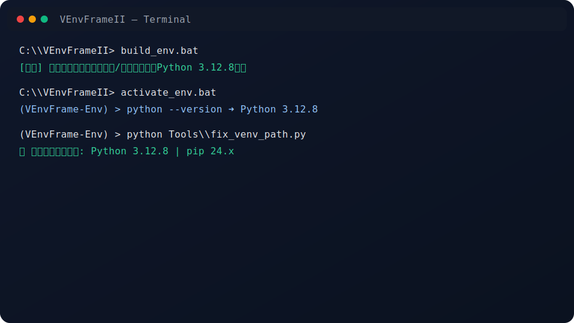
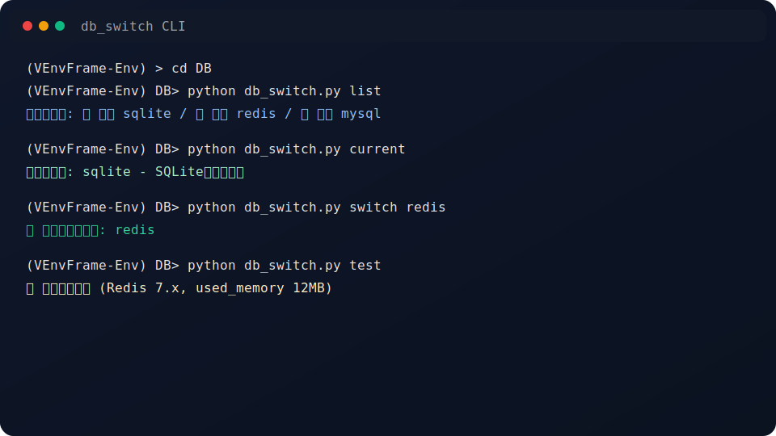

真实代码片段：虚拟环境修复
摘自 Tools/fix_venv_path.py（查找 Python 3.12.8 并修复 venv 配置）
# excerpt from Tools/fix_venv_path.py
possible_paths = [
r"C:\\Python312\\python.exe",
r"C:\\Users\\%USERNAME%\\AppData\\Local\\Programs\\Python\\Python312\\python.exe",
shutil.which("python"), shutil.which("python3"), shutil.which("python3.12"),
]
for path in possible_paths:
if path and os.path.exists(path):
result = subprocess.run([path, "-c", "import platform;print(platform.python_version())"],
capture_output=True, text=True, timeout=10)
if result.returncode == 0 and result.stdout.strip() == '3.12.8':
return os.path.abspath(path)
# 修复 pyvenv.cfg 中的 home / executable / command
if line.startswith('home = '):
new_lines.append(f'home = {python_home}\n')
elif line.startswith('executable = '):
new_lines.append(f'executable = {python_exe}\n')一键构建（片段）: build_env.bat
REM 解析镜像设置（命令行 > 配置文件 > 默认无）
if /i "%MIRROR%"=="tsinghua" set "PIP_ARGS=--index-url https://pypi.tuna.tsinghua.edu.cn/simple"
...
:HAVE_PY312
echo 使用 Python 3.12.8: %PY_EXE%
if not exist "%VENV_DIR%\Scripts\python.exe" (
"%PY_EXE%" -m venv "%VENV_DIR%"
)


快速上手与下载
克隆与构建
git clone https://github.com/is716652/VEnvFrameII.git
cd VEnvFrameII
build_env.bat
activate_env.bat